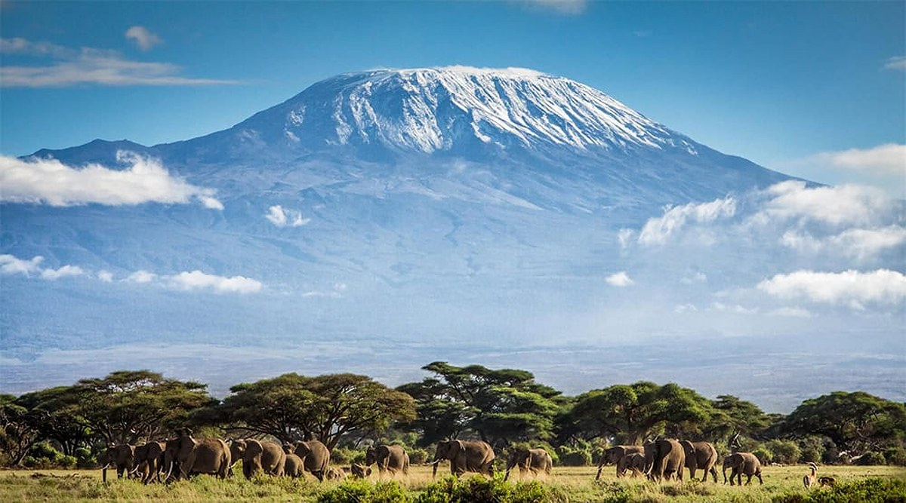

Photograph: Onyango George / EA Hospitality Pulse
Kilimanjaro has a fire season. The business around it still sells September as if it does not.
For the second time in 25 days, fire has forced Tanzania's park authority onto the defensive on Africa's highest mountain, and this time it closed the western approach that carries some of the mountain's longest climbs. The blazes are not bad luck. They arrive at the dry end of the climbing year with a regularity that the hotels, lodges and operators around the mountain have yet to write into their contracts.
Early on Monday morning, fire was detected in the Sangarini area of Kamwanga, inside Kilimanjaro National Park on the mountain's western flank, moving towards the Shira Plateau. By the afternoon Tanzania National Parks had done something the September fire earlier this month had not required: it shut two climbing routes. Lemosho and Londorosi, the western approaches, were suspended until further notice.
"The tourists who wanted to use Lemosho and Londorosi routes should use alternative routes of Machame, Marangu, Mweka and Rongai," Catherine Mbena, the assistant conservation commissioner who heads TANAPA's corporate communication, told The Tranquillity News. The authority said the extent of the burn had not been established, that its cause was under investigation, and that strong winds, dry vegetation and steep ground were making the work hard. It gave no date for reopening. Crews from the Fire and Rescue Force, the Tanzania Forest Services Agency, the Enduimet Wildlife Management Area, the reserve force and neighbouring villages were on the slopes alongside park staff, Xinhua reported.
This was the second fire on the mountain in 25 days. On 3 September, at about half past three in the afternoon, smoke rose from the Kikererwa area near Rombo district, close to the Kenyan border. Before dawn the next day the flames were visible between Kibo and Mawenzi. That fire burned more than 1,800 hectares, according to Tanzanian authorities, and took close to two weeks of firefighting to bring fully under control. Helicopters were brought in for the high ground. On 5 September Ashatu Kijaji, the minister for natural resources and tourism, walked the fire line. "As of this morning, we had managed to contain more than 90 percent of the fire," she said. She did not rule out human activity, and the government announced it would begin acquiring a dedicated helicopter for TANAPA.
Taken one at a time, each of these fires is a contained incident with no injuries, and TANAPA has been careful to say that climbing elsewhere continued normally. Taken together, they describe something the region's hospitality industry has been slow to price: Kilimanjaro now has a fire season, and it falls in the most commercially awkward place in the calendar.
The record is short but consistent. Tanzanian press accounts list significant fires in 2018, 2020, 2022 and 2023, and The Tanzania Times, reviewing them this month, noted that each erupted in September or October. In October 2020 a fire started at Whona, a rest point used by climbers bound for the Mandara and Horombo huts on the Marangu side. "Firefighters from TANAPA, other government institutions and locals are continuing with the efforts to contain it," Pascal Shelutete, a TANAPA official, said at the time. Agence France-Presse later reported that the 2020 blaze raged for a week across 95 square kilometres, though other official accounts gave a smaller figure.
Two years later the mountain burned again, beginning near Karanga camp at about 4,000 metres on the south side, and consuming more than 34 square kilometres over several days. The then minister, Pindi Chana, said the situation was "generally under control". Herman Batiho, a TANAPA official, told reporters he was "sure" human activity was to blame, through illegal poaching or people collecting honey. In September 2023 a smaller fire burned about 17 acres. This year there have been two in a month.
The mechanism is not mysterious. Officials said strong winds and Erica vegetation at about 3,000 metres drove the rapid spread of the September blaze, and the heath belt is at its driest at the end of the long dry season. Add wind, add a human ignition source, whether a honey hunter, a poacher's fire or a careless cooking stove, and a small blaze on steep, roadless ground becomes a multi-day operation. The ignition may be an accident each time. The window in which accidents become fires is not.
That window is late September and October, the tail of the dry-season climbing months and the weeks before the short rains. For many lodges it is also when the following year's contract rates with overseas operators are being settled.
Closing Lemosho and Londorosi does not stop climbing on Kilimanjaro. TANAPA's instruction is explicit: change route, do not cancel. But the substitution is less neat than the statement suggests, and the cost falls on the businesses around the mountain rather than on the park.
Lemosho starts at Londorosi gate on the western side, a few hours' drive from Arusha, and crosses the Shira Plateau from west to east before joining the Machame route near the Lava Tower. Operators sell it as the quieter, more scenic way up, and usually run it over seven or eight days. Machame, the obvious substitute, already carries heavier traffic and shares Lemosho's trail only from the Lava Tower upwards. A guest moved from an eight-day Lemosho to a Machame itinerary therefore does not simply swap trails. They may come off the mountain a day or two early, or need a longer route built at short notice, and every change ripples into transfers, park fees, crew rosters and, above all, the hotel nights either side of the climb.
This is where the hospitality exposure sits. The trekking companies carry the operational burden, but the pre-climb and post-climb nights in Moshi and Arusha, the lodges on the western approach around West Kilimanjaro and the Enduimet area, and the safari and Zanzibar extensions sold behind a climb are all booked against fixed dates. When a route closes, those dates move. Who pays for the extra night, the forfeited night or the rebooked flight is a question most contracts answer only through a general force majeure clause, if at all.
The new state travel policy does not close that gap. From Thursday, every foreign visitor entering mainland Tanzania must hold the government's US$44 policy. As we reported on Monday, the cover the regulations require is for emergency medical treatment, evacuation, repatriation and lost luggage. A closed climbing route is none of those things. Guests who assume the mandatory policy protects their trip against a mountain closure are likely to be disappointed, and the disappointment will arrive at the lodge reception desk rather than at an insurer's claims line.
The fire season will end, and soon. What replaces it is not a quiet period but a different hazard. On 18 August the Tanzania Meteorological Authority warned that this year's short rains would be shaped by an unusually powerful Pacific warming. "The 2026 Vuli rainfall season is expected to be substantially influenced by a very strong El Niño," said Ladislaus Chang'a, TMA's director general. The authority forecast above-normal to normal rainfall across the north-eastern highlands of Arusha, Manyara and Kilimanjaro, intensifying in November and continuing into January 2027, with warnings of eroded roads, damaged bridges and disrupted airports.
For a lodge on the mountain's lower slopes, that sequence matters. The same quarter can bring a route closure for fire in late September and a washed-out access road in November. Each is individually a known risk. Together they compress the safe selling window at the end of the year into something shorter than most rate cards assume, and they do so at a moment when TANAPA's firefighting capacity is still being built. The helicopter is a pledge, not an aircraft. In 2023 China presented a US$1 million cheque for disaster management at the park's 50th anniversary celebrations; three fire seasons later, the minister is announcing that the authority will begin acquiring an aircraft of its own.
None of this makes Kilimanjaro a less attractive product. Climbing continued through each previous fire, and TANAPA says it continues now on the other routes. The point is narrower and more practical. A risk that recurs in the same weeks almost every year is no longer an act of God. It is a seasonal feature, and it should be treated the way coastal hotels treat the monsoon or lodges in the Mara treat the long rains: written into terms, communicated before booking and costed into rates.
For bush properties on and around the mountain, the first task is contractual. Any lodge that sells climb-linked stays for September and October should add a specific route-closure clause to its 2027 contracts with trekking and safari operators, stating whether nights lost to a TANAPA closure are refundable, transferable or chargeable. Relying on general force majeure invites a dispute every time the wind turns. Properties on the western approach should also agree a rerouting protocol with their operator partners now: which alternative route, which transfer, and which night is added or dropped.
For city hotels in Moshi and Arusha, the exposure is volume and timing rather than loss. A closure moves guests rather than removing them. Hotels should hold a small amount of flexible inventory in late September and October and offer operators a named rate for unplanned extra nights, rather than rack rate on the day. The hotel that answers the operator's phone first with a price will keep the business.
For beach properties in Zanzibar and on the coast that sell post-climb extensions, the effect is shifted arrivals. A guest who comes off the mountain early will want to reach the beach early. Date-change flexibility on climb-linked packages costs little and earns loyalty from the operators who send the volume.
For everyone, guest communication should change before booking, not after. Tell September and October climbers, plainly, that fire can close routes at short notice, that the mandatory Tanzanian policy does not cover it, and that separate trip-interruption cover is worth having.
The indicators to watch are specific. First, TANAPA's notice reopening Lemosho and Londorosi, and whether it comes with an assessment of the area burned. Second, the findings of the investigations into both September fires, which TANAPA and the minister have promised but not yet published. Third, whether the helicopter moves from announcement to procurement before next year's dry season. And fourth, the onset of the short rains over the north-eastern highlands in October, which will end the fire risk for this year and open the flood risk that follows it.
Kilimanjaro will be climbed next September, as it has been through every fire so far. The question is whether the businesses that depend on it will have written the fire into their terms by then, or will once again be reading about it in a park authority statement on a Monday afternoon.
📣 Telegram 💬 WhatsApp 💼 LinkedIn 📚 All guides